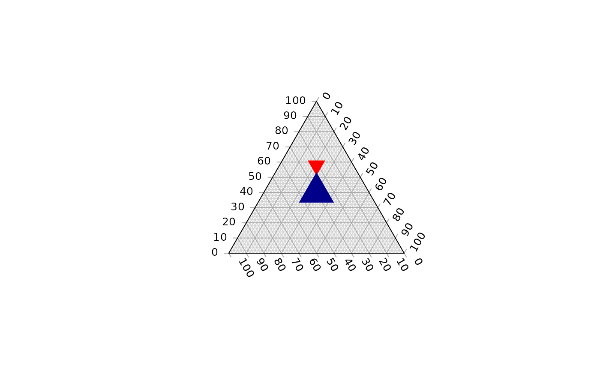

Function to fill a ternary plot with coloured tiles. Useful in combination with
TernaryPointValues and TernaryContour.
TernaryTiles( x, y, down, resolution, col, direction = getOption("ternDirection") )
| x, y | Numeric vectors specifying x and y coordinates of centres of each triangle. |
|---|---|
| down | Logical vector specifying |
| resolution | The number of triangles whose base should lie on the longest axis of the triangle. Higher numbers will result in smaller subdivisions and smoother colour gradients, but at a computational cost. |
| col | Vector specifying the colour with which to fill each triangle. |
| direction | (optional) Integer specifying the direction that the current ternary plot should point: 1, up; 2, right; 3, down; 4, left. |
